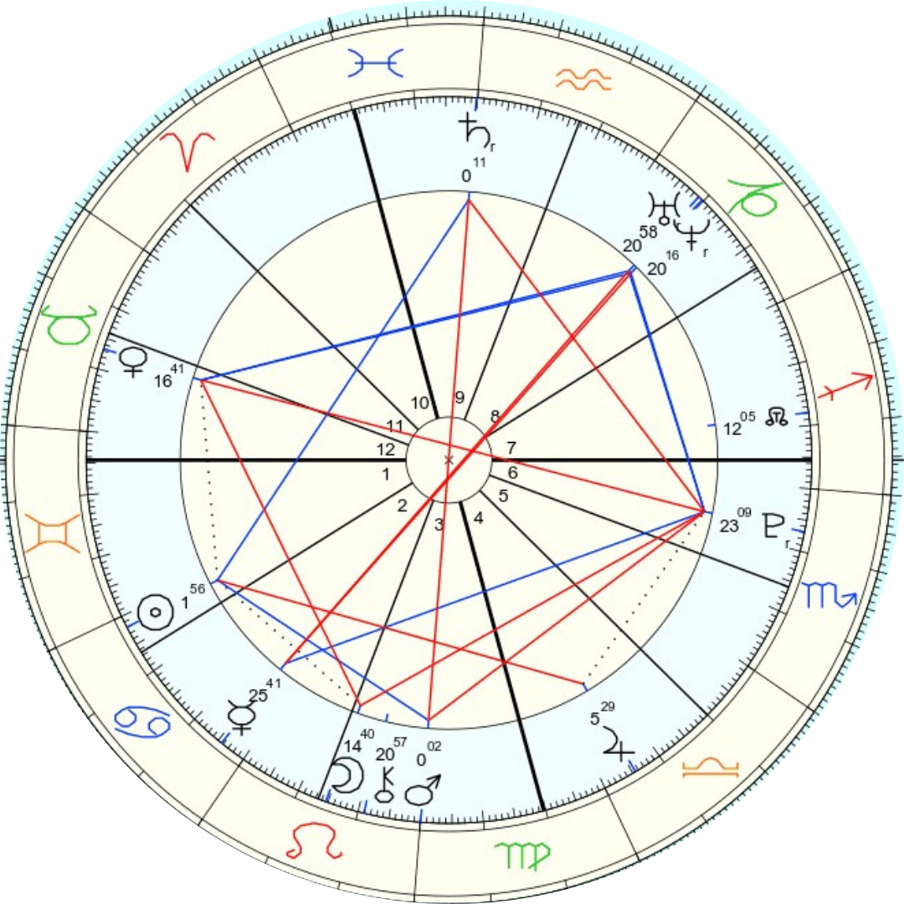
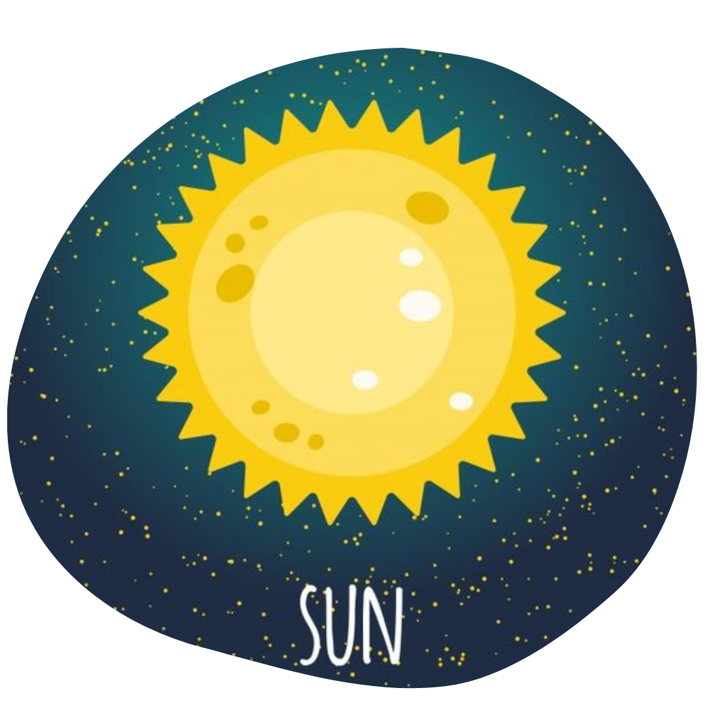
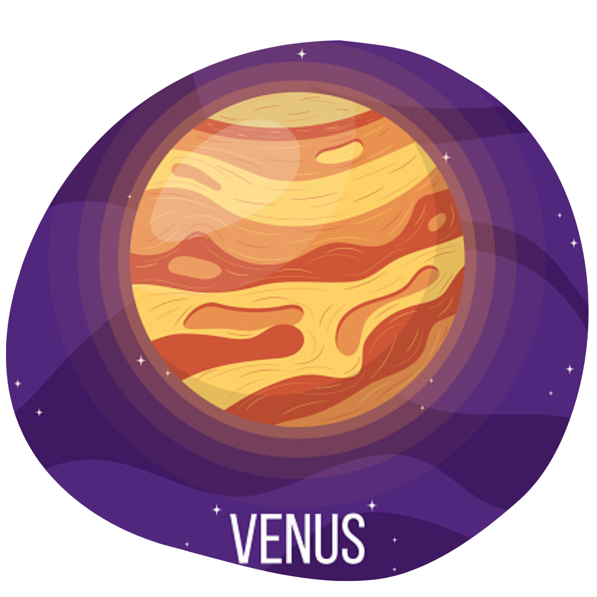
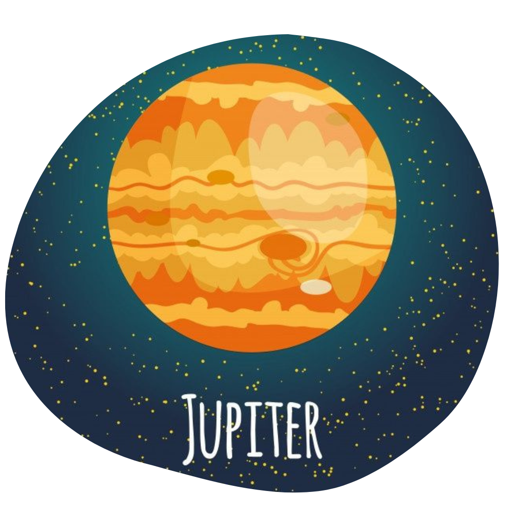
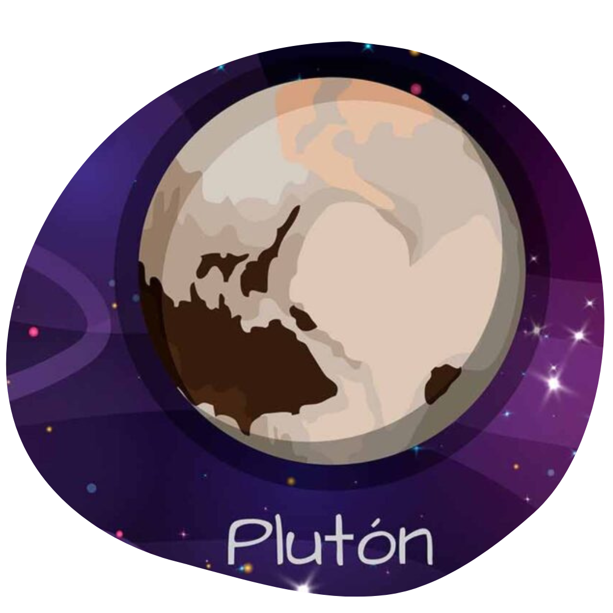

Un poco de mi Historia
Para hablar un poco de como soy, dejame mostrarte mi carta natal, podriamos decir que esta es la imagen mas acertada que podemos encontrar de nosotrxs mismxs, aca nos muestra como nos movemos, que nos motiva, nuestra energia, nuestra pasion, nuestros desafios y sueños. Esto es parte intrinseca de mi vida. Ahora vamos a echar un vistazo mas de cerca:
Mis Planetas:
Sol en Cancer, en casa 1: . El Sol en Cancer, nos habla de encontrar el brillo, aquello que me carga de energía en la exploración emocional, tanto mía como de aquellos que me rodean, voy a brillar, cuando pueda hacerme cargo de mi propia identidad que nutre y que quiere que lo nutran.
Venus en Tauro, en casa 12: . Aquí Venus se enecuentra en su domicilio, el planeta del deseo, de las relaciones en el signo de Tauro, es decir, todo aquello que puedo explorar con mis 5 sentidos. La diferencia, es que al encontrarse en la casa de Piscis, va a haber una tendencia a conectarse con las energías colectivas de este signo, es decir, todo aquello que sucede a nivel vincular, que no solamente me pertenece a mi, sino a mis antepasados y a la sociedad, va a ser recibido y canalizado por esta Venus.
Jupiter en Libra, en casa 4: . Nos encontramos con el planeta que todo lo expande, en el signo mas social y refinado del zodiaco. Aquel que tiende a generar buenas impresiones para no entrar en conflicto con sus pares, manteniendo siempre la diplomacia como moneda de cambio. Cuando Jupiter se encuentra en la casa 4, nos habla de la necesidad del individuo de poder sentar sus propias bases de una manera equilibrada, que le de una estructura y le permita desde alli generar sus propios vinculos y leyes.
Pluton en Escorpio, en casa 6: . Los nacidos bajo éste transito, somos una generación que viene a derribar los temas tabu de la sociedad, todo lo que se guardo abajo de la alfombra, de nuestros ancestros, antepasados, etc. Las injusticias, la desiugualdad, el sexo, la identidad de genero, la sexualidad, son todos temas que venimos a sacar a la luz, a darle otra mirada, otra reversion, venimos a hacer historia, somos la generación bisgara. En cuanto a la casa 6, la intensidad, puesta al servicio del trabajo, los detalles se vuelven un elemento primordial, la necesidad de canalizar la energia contenida adentro a traves del ambito laboral, todo lo que que trascienda al ego, se vuelve un canal para darle via a estas corrientes energeticas. Vamos a necesitar un espacio donde volcar todos los temas que rondan nuestra cabeza, porque aca esta energia se puede volver obsesiva si no es canalizada correctamente, es necesario ponerla al servicio de lxs otrxs, para que pueda trascender y ser utilizada como canal en vez de implosionar dentro.
